Here, in this article we will spend a little bit of time discussing the non-physical envelope that surrounds our physical reality. This is the realm of the “spirit world” and consists of many strange and interesting sights, sounds and apparitions. It tends to frighten, but that is just ignorance and superstition influences. In reality, the non-physical world is just as real as the physical world is, with one exception. Our human senses are not able to peer into the reality that it cannot see.
But…
In many instance, the machines and the devices that we construct, are able to sense it. And if we configure the equipment to look for the right things, we could well be astounded at what we might find.
What would we find?
Well, aside from the natural world, we would find people and places, and things, and activities that are intended to be hidden from our human observation.
A quick review
For those of you who have just stumbled on this article in the MM universe, here’s a most basic primer. You know, to put everyone on the “same page” in regards to ideas and concepts.
We are consciousness.We are not a person, nor a body, nor a brain. We are consciousness. We temporarily reside within a body. But we are not that body. It’s much like this picture describes…
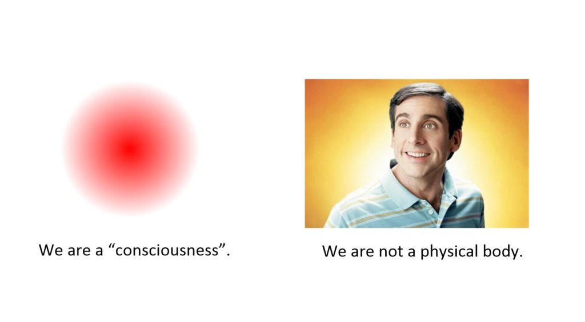
We do not share a universe. Our singular consciousness moves from static world-line to static world-line. We move from one world-line to another by our thoughts. Thoughts are the ONLY thing that consciousness can control.
Instead of sharing a physical universe, where we are a brain that controls the movement of a physical person inside that universe (the Newtonian reality), we are something else. We are consciousness. Which is a collection of very, very, VERY tiny particles (many, many times smaller than atoms). And our consciousness moves from one frozen snapshot in time to the next.
Time is how this movement is perceived. In our universe there is no such thing as time. It just simply drops out of the equations. And what we have left is a universe of quanta. It is a quantum universe of possibilities. And the reality is that there is an infinite (or near infinite) number of world-lines. These are frozen “snap shots in time” that our consciousness moves through and navigates by thought.
So, over all, it pretty much looks like this graphic below. If we map out each world-line as a “dot”, and place the most-likely or highest-probability world-lines that our thoughts will take us, then our life-line would look something like this…
Thoughts are extremely important. What we think about steers us towards the world-lines that we inhabit.
- If we think “bad” thoughts we will head towards world-lines with “bad” events.
- If we think “neutral” thoughts we will head towards world-lines with “neutral ” content.
- If we think “happy” thoughts, we will head towards world-lines full of happy events.
Everything is real to us. Each world-line is a real physical world. It is a frozen snapshot of time. And our movement though it is exactly how we experience time.
Our thoughts can influence the kind of life we live. Our thoughts navigate our lives, and while there are are various limitations placed upon us, we ultimately control what happens to us by our thoughts.
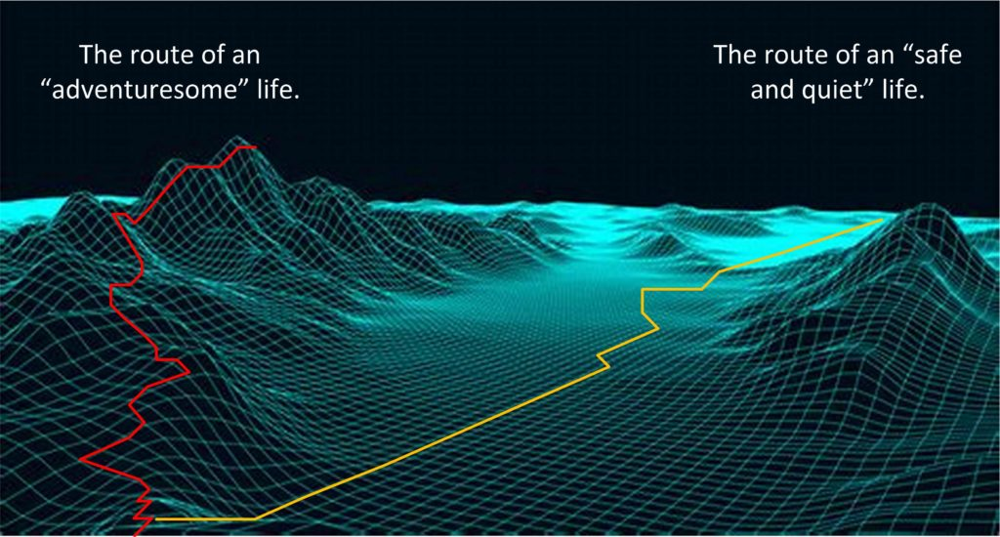
World-lines are complex. Now each world-line has two components. They are a physical reality, and a non-physical reality. The physical reality is what we can sense with our human body. The non-physical is what we cannot sense with our physical body.
- Physical-reality is what our human senses can sense, see and observe.
- Non-Physical-reality is what our human senses are unable to see and observe.
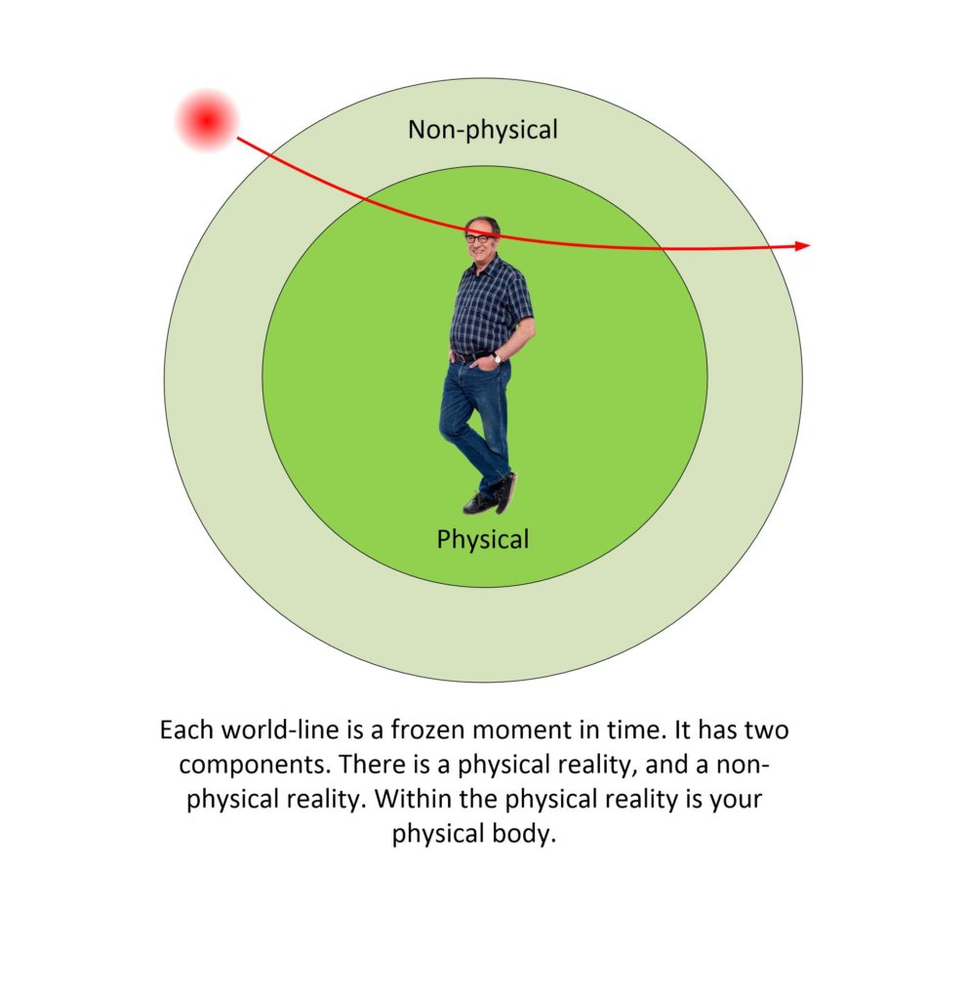
And given the right conditions, the right technology, and the right circumstances, we can sometimes get glimpses of the non-physical world that surrounds us. And we are going to talk about this subject now…
Density Levels and Technological Advancement
“Sometimes people hold a core belief that is very strong. When they are presented with evidence that works against that belief, the new evidence cannot be accepted. It would create a feeling that is extremely uncomfortable, called cognitive dissonance. And because it is so important to protect that core belief, they will rationalize, ignore and even deny anything that doesn’t fit with the core belief.” -ThinkSquad, 2015
Quantum particles are ubiquitous throughout our universe. They are everywhere. They are primarily comprised of minuscule small vibrating strings that vibrate and resonate at a very high speed or frequency.
[1] Understanding particle physics: 7) particles are quanta [2] What are quanta? – quantum interactive [3] A New Map of All the Particles and Forces - Quanta Magazine
As particles collect together in groups, or cluster together, their frequency of vibration shows down. This has to do with the inherent inertial components of a group creation. The bigger the group cluster of particles, the slower the frequency of vibration.
Vibrational frequency in the strictest sense that I refer to here, is not the physical component, normally referred to in the chemical sciences. But rather the behavior of the vibrating strings themselves. This is quantum level vibration, as opposed to atomic level vibration and the equivalent change in potentials.
Note: On the dimension of the physical. The purpose of this article is to describe in an easy way, very difficult concepts. To do so, certain “crutches” need to be employed, which many not be wholly accurate. Truth be told, there is no physical space at all. But the quanta themselves create this illusion. In so doing, they create layers or dimensional boundaries. Space and the illusion of space is one such creation. Thus, within this boundary we can see that particles tend to cluster together in groups upon this fabric or cloth which is raw dimensionless space.
Those readers who have been following the nonsense that is often available on the Internet will be quite confused here. When I refer to density, I am specifically referring to quantum level behaviors of groups of particles within a dimensional framework.
I am absolutely NOT referring to any of the “New age” redefinitions of “density”. These new definitions are confusing. These are definitions such as in the Cassiopaea and Ra materials related to extraterrestrial beings and consciousness.
Magnitude
Higher orders of existence utilize widely dispersed groups of quantum clusters.
Phew! Did I just say that? OK. In other words, the more complex a "thing"... the greater the number of quanta that are are involved. A pencil (you do remember those things, don't you?) has a set amount of quanta associated with it. yet, a living creature, such as a cow, would have many, many, MANY more quanta associated with it. The difference between a pencil and a cow, can be considered a "higher order of existence". And as the number of these quantum cluster increase, so does the number of interactions that they have with each other. Which is known as "entanglement". And thus they tend to disperse as they get more, and more entangled.
This way, they can maintain high frequencies of vibration, while maintaining a soul cloud consciousness.
This is important. Read it again and study it again if your do not understand it completely. As collections of quanta increase in size, so does the accumulated properties of the aggregate. It's synergistic, not additive. 2 + 2 = 8 As the properties of the aggregate increase, so does the resultant vibrations of those clusters. Vibration? Vibration is this understanding relates to the wave properties of the quanta. While a bare and lonely individual quanta might have a low and sluggish pulse, when it interacts and entangles with other quanta, the vibrational rate increases. The more quanta that becomes entangled, the greater the vibrational levels attained. At a certain threshold, the vibrational frequency becomes one that can support a consciousness. Which is pretty much why pencils don't have a consciousness, while cattle do.
Lower orders of existence rely on large, closely packed, groups of clusters. These tend to vibrate at slower rates dependent on their size.
Such as a pencil, a stone, and a glass of water.
Because there are functional limits on the quanta that one can absorb into ones cloud as a function of density inertia, entitles tend to strive to grow and modify their quantum existence in such a way as to operate in higher vibratory levels.
Obviously the universe is populated with intelligence and consciousness. Otherwise, you would not be reading this. It is a natural evolution that quanta entangle with other quanta. And part of this evolution is the increase in vibration of the entangled bodies. As the size of the entanglement increases, so does the complexity of the entangled body as a whole, and at some point in time, consciousness evolves and manifests.
Thus, an entity that has a very large quantum cloud and that maintains it successfully at a high frequency of vibration is considered to have a high “spiritual” or “quantum” (light) density.
Many entangled quanta = rapid and profound vibrations. These vibrations are known as "high frequency" and are associated with light. Thus they are considered to be of light density.
Their various frequencies overlap in great, beautiful patterns.
While, an entity, with a smaller quantum cloud, or one that operates at a lower frequency is considered to have a high (thick) density.
One must think of density as a jar containing all the quanta of a given entity.
An “advanced” entity will have a big jar full of quanta. But that quanta will have a lot of space to move around in.
Conversely, a more “primitive” entity would have a small, mostly layered, jar of quanta. The quanta would be clustered in a corner or on the bottom of the jar in a thick pile of goo.
We thus, say that the more advanced entity has a container (jar) of quanta that is less dense than the novice entity.
Personally, I don’t like these terms because they are confusing.
Physical manifestations of quanta are slower and closer together in the physical world (thus, denser). We also thus use the term to describe a lower state of energy. Thus possibly, generating two polar opposites in meaning.
For all purposes here, please consider that one should have a quanta signature that is organized in pure basic forms of great physical expanse. That would be opposed to tight, dense forms of quanta clusters.
Structure and order
Further, Higher frequency quanta organized as smaller discrete packets follow a more organized or pure structure.
Quanta clumps together though entanglements. These form structures, or "packets".
Quanta can combine together into “building blocks”. Much like this (as an example)…
The building blocks…
Their combined “dances” are more harmonic. The coarser, less organized quanta follow a chaotic pattern.
(Not especially accurate, but good enough for the model that is presented here. All quanta form patterns. The more chaotic patterns are just extremely complex relationships, and thus appear to be confused, disorganized and complex.)
A chaotic system is one in which infinitesimal differences in the starting conditions lead to drastically different results as the system evolves.
This concept was summarized by mathematician Edward Lorenz,” Chaos (is at the point) when the present determines the future, but the approximate present does not approximately determine the future.”
There’s an important distinction to make between a chaotic quantum system and a random quanta system.
Given the starting conditions, a chaotic system is entirely deterministic.
A random system, on the other hand, is entirely non-deterministic, even when the starting conditions are known.
That is, with enough information, the evolution of a chaotic system is entirely predictable, but in a random system there’s no amount of information that would be enough to predict the system’s evolution. All of this predictability defines inter-dimensional order.
Variations
Other races, both terrestrial and extraterrestrial, operate at different density levels.
Understanding that consciousness is connected with the number of entangled quanta, it should thus be evident that it is also tied to energy levels of existence. A snail would have a different energy level than a dog. A tiger would have a different energy level than a human. A human would have a different energy level than an extraterrestrial from Tralfamador.
Since we can only perceive those at the most coarsest levels (the densest), we often are ignorant of many entities that cohabit the planet with us.
Sometimes, due to various physical events, we can occasionally perceive these other entities.
When we do they are often misinterpreted as spirits, sprites, ghosts, angels, demons and the like. These creatures exist, but humans have a very hard time distinguishing what they perceive.
Generally, higher order frequency beings are usually benign and harmless.
It the fear of the unknown that causes many false and deceptive myths that propagate about these creatures through history.
Death
When a creature dies, the body remains but the consciousness exits the reality section of the world-line. It exists. It’s just that we humans are not able to “see” wave forms. We can only see physical things when the consciousness is attached to bodies in the particle state.
With the advent of cameras, and the technology that enables high “shutter speeds” and extended wavelength records, we can sometimes observe the departed in wave form. While the body is now long dead and has been removed.
This is actually quite common in hospitals and nursing homes. Such as this example.
See anything unusual about this picture?
Look at the mirror.
Here’s a close up view of the mirror…
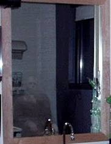
Spirits and other creatures that operate at higher density levels do exist and are quite common.
They contain both terrestrial derived entities and extraterrestrial entities. Most do not really care to have dealings with humans.
And since they are of wave duality, they are able to enter the MWI at any point, independent of time. Which provides us some very interesting observations.
Here’s the spirit of a little (American Indian) girl wandering in the woods late at night and startling a buck (male deer) at a feeding station where a trail-cam was able to photograph the encounter.
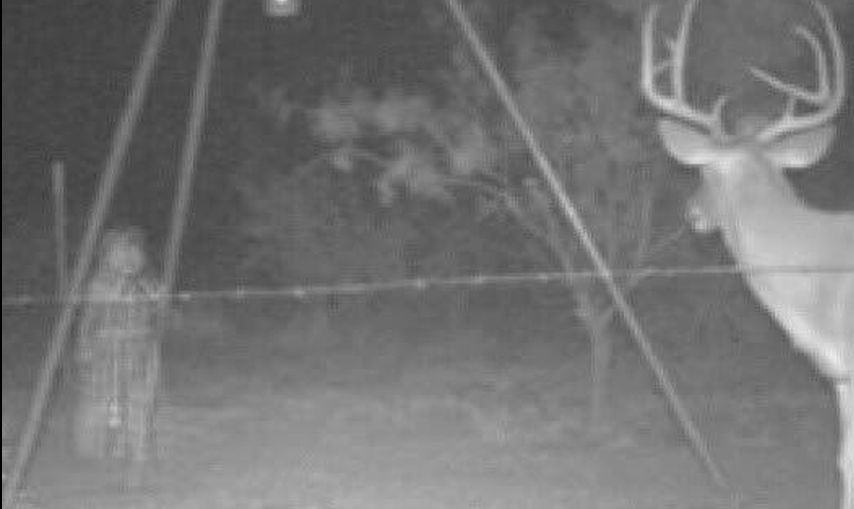
The ability to see humans, in the non-physical form is very common. They are generally associated with ghosts and spirits, and many people are fearful of them, but it need not be the case. When a person stops traveling the MWI in the particle form, they continue to do so in the wave form. And thus people can (if they are sensitive), or equipment can (if it is properly configured) observe and record these encounters…
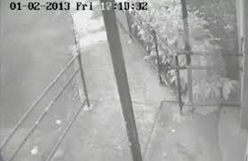
Which brings up the interesting subject of “phasing“.
Phasing Ability
Some of the higher density entities, whether terrestrial or extraterrestrial, have the ability to “phase” in and out of the lower densities.
it is the ability to lower your aggregate vibrational level to a point where simpler, and denser, entities and creatures can observe and interact with you. Or, raise their level. Thus making them invisible to lower density entities.
This ability can make them invisible to humans on demand. They do not need a machine, device or technology to cloak their person or activities.
Only the more dense entities need these types of devices.
In phasing, the energy state and vibration rates change out of the normal physical visual range (as seen by humans). To be able to do this, the body must be capable of handling higher vibratory frequencies and states of existence.
Other animals, with different optical cones and different ways that their brains perceive vision, can often times see these entities, even when humans are unable to see them.
The principle behind this is simple.
Perception comes in many forms.
The form most commonly relied upon by humans is eyesight. Human eyesight is a very limited mechanism. We can only see in a very narrow band of frequencies and wavelengths.
Most of the universe operates at frequencies far higher than we can perceive.
For us to see these “other” things, we must either [1] speed up our ability to perceive, or [2] slow the frequency of vibration of the observed object down.
When a frequency of vibration of a given object is changed, it is known as “phasing”.
When the frequency speed is slowed down in such a way as it becomes observable by humans, we call that “phasing in and out of existence”.
The idea and concept that most other beings, entities, consciousness, and objects are unobservable to humans because of our limited range of perception is a fundamental one.
We, as humans, only observe a very small part of the world that we live in.
An example of phasing
Here we have a human (or humanoid creature) wearing a suit that enables them to “phase in and out” of the human observed reality.
The mystery of the Solway Spaceman - BBC News The Solway Firth Photo, 1964,(Spaceman) UFO Casebook Files
On 24th May 1964, Jim Templeton, a fireman from Carlisle in the North of England, took his young daughter out to the marches overlooking the Solway Firth to take some photographs. Nothing untoward happened, although both he and his wife noticed that an unusual aura in the atmosphere. n unusual aura in the atmosphere. There was a kind of electric charge in the air, though no storm came. Even nearby cows seemed upset by it. Some days later Mr Templeton got his photographs processed by the chemist, who said that it was a pity that the man who had walked past had spoiled the best shot of Elizabeth holding a bunch of flowers. Jim was puzzled. There had been nobody else on the marshes nearby at the time. But sure enough, on the picture in question there was a figure in a silvery white space suit projecting at an odd angle into the air behind the girl's back, as if an unwanted snooper had wrecked the shot. The case was reported to the police and taken up by Kodak, the film manufacturers, who offered free film for life to anyone who could solve the mystery when their experts failed. It was not, as the police at first guessed, a simple double exposure with one negative accidentally printed on top of another during processing. It was, as Chief Superintendent Oldcorn quickly concluded, just "one of those things... a freak picture." A few weeks later Jim Templeton received two mysterious visitors. He had never heard of MIBs: the subject was almost unknown in Britain then. But the two men who came to his house in a large Jaguar car wore dark suits and otherwise looked normal. The weird thing about them was their behavior. They only referred to one another by numbers and asked the most unusual questions as they drove Jim out to the marshes. They wanted to know in minute detail about the weather on the day of the photograph, the activities of local bird life and odd asides like that. Then they tried to make him admit that he had just photographed an ordinary man walking past. Jim responded politely, but nevertheless rejected their idea, at which they became irrationally angry and hustled themselves into the car, driving off and leaving him. The fire officer had to hike five miles across country to get home. - Landon Howell Owner & Editor - juiceenewsdaily.com
Examples of Consciousness phasing to wave forms…
Here’s some more examples of people who have died and the consciousness is still attached to the physical reality. Here’s another hospital CCV camera. On it was the short, few-second long video of a ghostly girl walking down the hallway…
Here’s another hospital CCV camera capture…
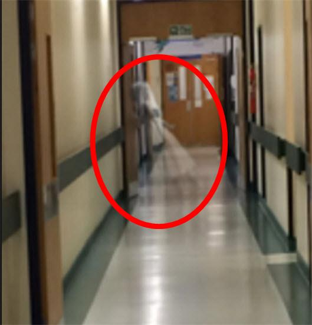
This ghostly figure was seen near the children’s ward at Leeds General Infirmary by hospital worker Andrew Milburn. There have been several stories of the sounds of footsteps in the corridors with no one around but nothing had been caught on camera.
Ghosts appear to be all over hospitals, don’t you know.
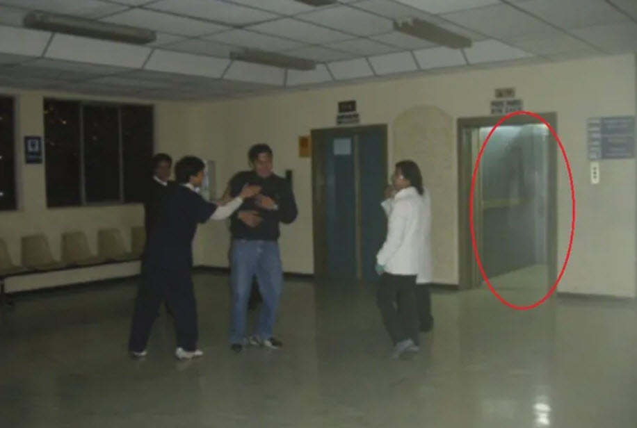
They can be recorded in elevators.
This unsettling image was first posted to Reddit in 2014 by user EskimoJake. They claim that their friend who is a doctor, took this picture while working at a Bolivian hospital in 2010.
Supposedly, the doctor and his friends didn’t initially notice the elevator door opening as they were too busy laughing and joking around. When they did finally see it, there was no one inside.
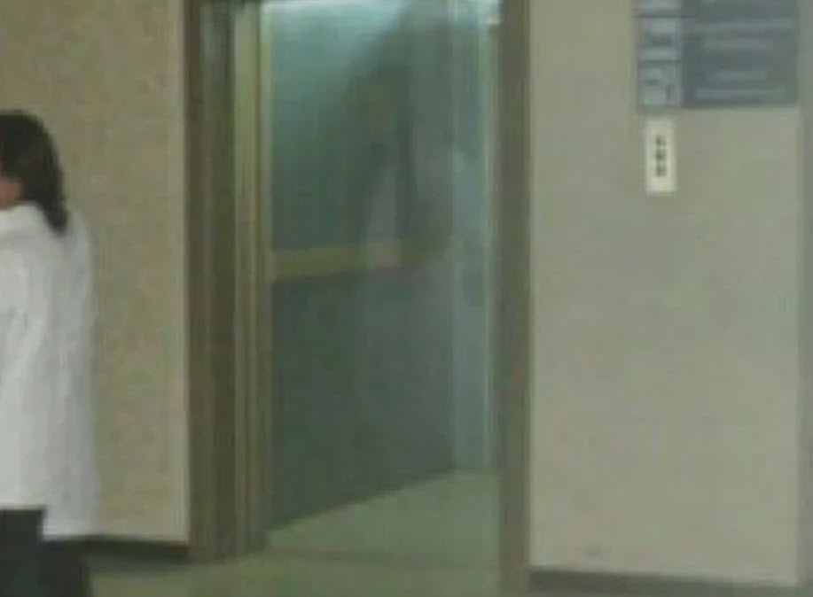
If you take a closer look at the ghostly figure, you can see that it appears to be a female with long, black hair. Her face looks pale and gaunt and she seems to be wearing a hospital gown.
Has the doctor actually managed to photograph a ghost in the elevator? If so, could it be that of a former patient? Perhaps even someone who may have passed away while being treated at this very hospital?
There is very little information available about this photo other than that it was taken at St. Francis Hospital in Tulsa, Oklahoma. At first glance, it doesn’t appear that the camera has captured anything unusual at all. That is until you spot the ghostly nurse standing on the far side of the bed.
St. Francis Hospital was founded in 1955 and some claim that this photograph may show the ghost of a former nurse who worked there. With her long, white apron and hair neatly tucked under her hat, the figure’s appearance certainly resembles a nurse from that era.
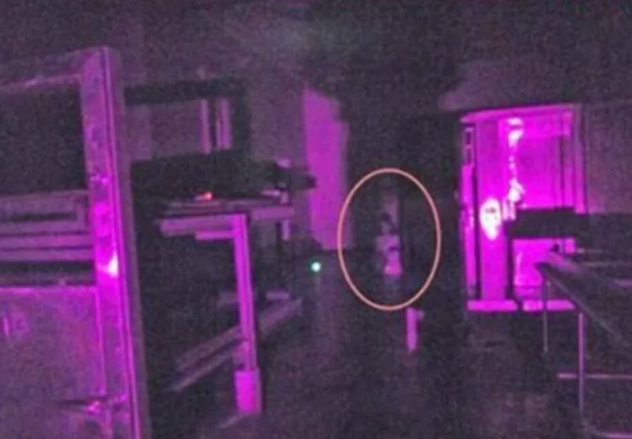
This photo was taken in the Grevillia Wing of the Beechworth Lunatic Asylum in Victoria, Australia by ghost hunters Rayleen Kable and Allen Tiller. They took the picture while investigating the grounds at Beechworth and believe that it shows the spirit of a young girl kneeling on the floor.
The figure certainly does look like a child. It appears to be wearing a nightgown and it looks as though it is holding something in its right hand, possibly a doll or teddy bear.
Beechworth Asylum was famous for its lax rules regarding institutionalization. With only two signatures, a person could be committed. Almost ten thousand people died in the building, the patients often restrained and treated with electroshock therapy.
Beechworth is reportedly haunted by the ghost of a young, Jewish woman who was mysteriously thrown to her death from a window. Because of strict religious beliefs, her body lay decomposing on the ground for two days while a rabbi came from Melbourne to officially move the body. Several visitors claim they’ve even seen a young girl under the window where the incident happened.
Another traumatic tale is that of a missing patient who couldn’t be found for weeks. Finally his body was discovered by a local dog named Max near the gatehouse at the edge of the property. A search party was assembled to search the area and they eventually found the patient’s body up a tree. Since then, people have reported seeing a man wandering around the gatehouse at night.
Countless other paranormal sightings have taken place at Beechworth Lunatic Asylum. Visions of doctors walking down dark hallways, screams, nurses kneeling by bedsides, one ghost hunter says a demonic voice told him to ‘get out’ and leave the asylum.
Is it possible that this photograph has captured the ghostly vision one of the former patients of Beechworth?
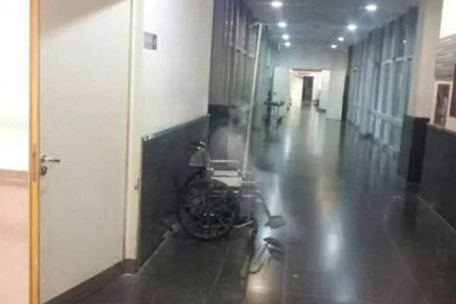
This photo first appeared online sometime around 2012. It was supposedly captured in the Clemente Alvarez Emergency Hospital in Argentina by a staff member known only as Diego.
Here’s another photo of a ghost in a hospital. This one comes with his own wheelchair thingy of-sorts thing-of-a-jig!
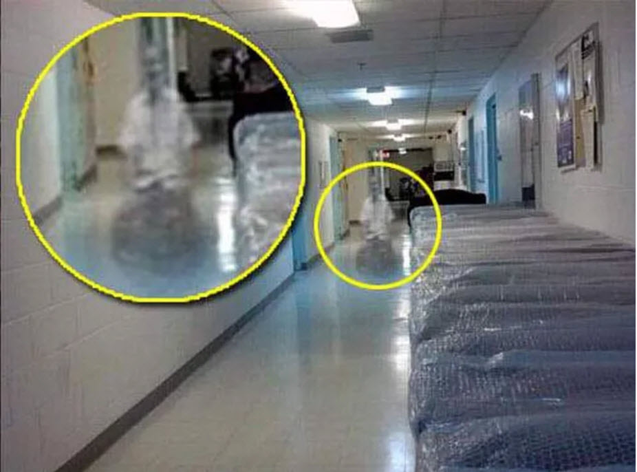
Around the same time, this photo was taken in the Kith Haven Assisted Living nursing home in Flint, Michigan. It shows a very similar figure rolling down a hallway in a wheelchair.
The employee who captured the picture said she saw it with her own eyes and quickly grabbed her phone to take a photo.
The apparition appears to have dark, sunken eyes and a wide open mouth. It also looks rather decrepit and thin. The white shirt that the figure is wearing seems to be too large for its frail frame.
And what of this?
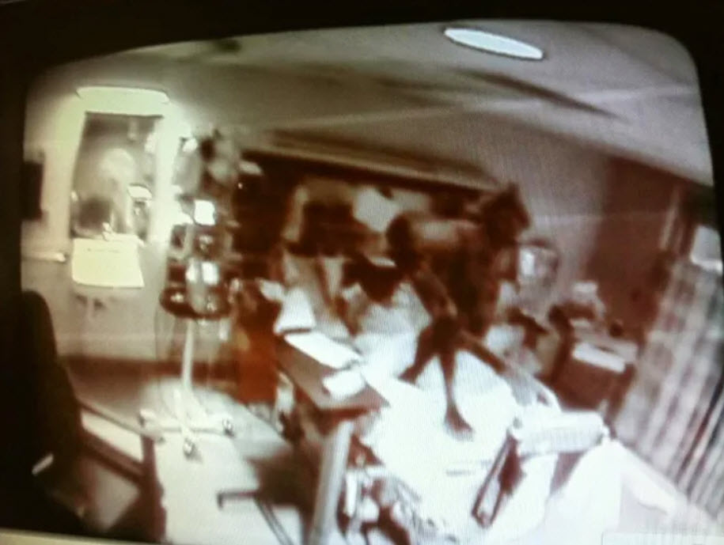
This spine chilling photo first appeared on social media in 2014 and since then has become rather well known. The are several stories of its origin however the most common one is that a nurse in a hospital took a screen shot of a security camera that was monitoring patients in the ward. She claims that she saw a demon-like figure walking up and down the bed of one particular patient. It had long black legs, and eerie slender fingers.
When she went to the ward to check on the patient there was no sign of the figure in the room, however the patient’s vitals began declining rapidly and the person passed away shortly after.
While many believe the nurse’s story to be true, several skeptics claim that the ‘demon’ is nothing more than a series of objects that are coincidentally lined up, giving the effect of a lurking creature.
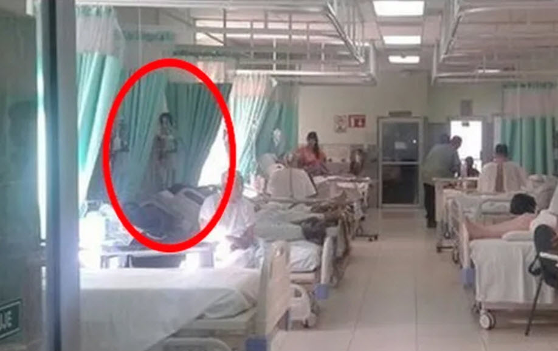
Opened in Mexico City in 1847, Hospital Juarez is an active medical center known for sightings of La Planchada (“the ironed lady”), a ghostly nurse from the mid-1900s who appears in a perfectly pressed nurse’s uniform.
Over the years, La Planchada has come to be known for treating patients in the hospital’s emergency section, often bringing about miraculous recoveries. This photo is believed by many to be the only one to have ever captured proof of the ghostly nurse as she makes her rounds.
Like many ghost stories, there are several versions of tale of La Planchada. Some say she was a nurse in love with a doctor who rejected her and drove her to suicide; others claim she would euthanize patients to relieve their pain. Whatever her origins, La Planchada is known as a benevolent spirit and there probably isn’t a patient in Hospital Juarez who wouldn’t be happy to see her.
And there is this vision of the right instant in time when the camera shutter clicks on the right spot at the right time and discovers… this.
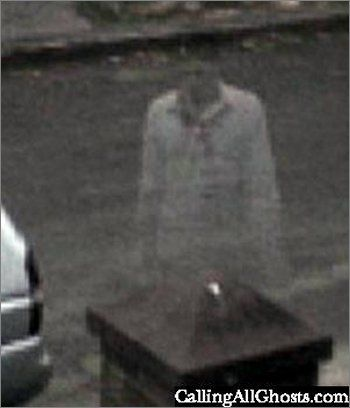
When a person dies, their quanta starts to detach from their physical selves and begins to enter the other dimensions in the universe.
Oh, here I go again! Not being specific enough. The non-physical reality surrounds the physical reality in layers, like an onion. And many Eastern religions have mapped these layers and given them names like "astral plane", "causal plane", etc. Once the consciousness is in the wave form it can do many things. Namely it can travel. Travel. It can travel in the various physical reality. It can travel through the various (onion layers) of the non-physical reality. It can enter "the tunnel of light" and depart this universe and enter the universe of soul. From when the consciousness originated. But... It can travel within the MWI; the various world-lines itself. This it can do, as the MWI are part of our "physical universe". But many choose not to do so simply because it is rather boring for them to do.
To some this looks like ghosts and spirits, but there is no reason to be fearful.
This is a natural aspect of quantum realignment.
On occasion, due to specific atmospheric conditions, sometimes entities of souls can have various aspects of their being photographed. When this happens, we are actually photographing the quanta “phasing” from the physical to another dimensional state.
Our equipment can record the wave lengths during transition.
Consciousness has form.
Did you notice something?
When a person’s quanta is photographed in wave form, or the transition to it (via “phasing”) it’s not a floating globe (as I have depicted throughout MM). It is the general shape and form of a body.
This is very important.
The consciousness has a FORM. It’s form tends to consist of the upper torso, and the head. Legs and arms might be present, but not always.
Fears, Frauds, and Boogiemen…
Now, let’s broach the uncomfortable reality. There are many, many frauds out there masquerading as actual events. Thus making it very difficult to compile a list of real examples of visions of the non-physical reality.
Thus, simply because there are so many hoaxes prevalent out there, anything out of the normal is discounted as a hoax, and a fraud. This is intentional.
On one hand, you have “experts” who use this avenue to acquire prestige within their respective fields. Such as in the Science Fiction movie “Contact” with actress Jodie Foster. In that movie was a couple of characters; Mr. David Drumlin, and James Woods (Michael Kitz) who played that role. They thwarted her every move, and constantly blocked funding, all so that he could climb the rings of power within the United States government. Personal power, and wealth accumulation, over the truth and science.
And then on the other hand, you have profiteers. They create “ghost” websites and then generate content to scare people with it. These individuals create photos and videos to amuse, scare and titillate, and derive personal profit from ad revenue and product placement. Often their forgeries are rather good, or at least better than amateurs.
-
Top 10 Ghost Websites – Paranormal | Higgypop
Then, of course, you have amateurs. These people just throw together some kind of hoax for “shits and giggles”. Their motivations are unclear, their ultimate goals are kept to themselves.
And then finally, you have real mysteries. These are actual “real deal” events that cannot be discounted away oh so easily. These events are important because they offer us a glimpse into a world that we are not apt to observe normally. You might come across a photo here, or there, or a video on you-tube. But with the great collection of hoaxes out there, it’s really difficult to find convincing examples.
Let’s look at a couple borderline cases…
What of ghosts?
You can see all sorts of things on the internet. But what is true and what is fake?
In this instance, you most certainly have a cat hissing at something at the other side of the door, and the housewife is not seeing anything strange. That is obvious. What is odd is the image of a ghostly figure in the door.
Was this figure photoshopped there? Intentionally, you understand, to create a ghostly narrative? Or, was the “back story” accurate?
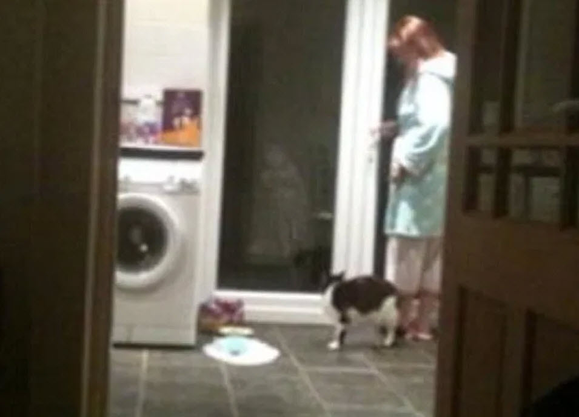
The back story…
Supposedly, this image was captured on a computer cam. The cat was behaving strangely and hissing at thin air. No one saw the spirit, it was only recorded on the computer.
This photo dates back to 2013, perhaps even earlier. It isn’t known where this took place, but it is believed to be somewhere in North America. It could be a hoax, or genuine. No one will ever know.
It is provided here as an example only.
You see, it dos not matter to us whether or not it is a hoax. It is just a good illustration that different species can see different things. In this case the cat can sense things that the human woman cannot.
As we have discussed, the non-physical world for a cat is different than the non-physical world of a human. Thus they can sense things that humans cannot.
This isn’t just MM talking. This is well established physical and biological understandings. Different species can see different things and all of us perceive the physical reality differently than others.
What of ghosts of loved ones?
Here’s another borderline case. This backstory is much better, than a computer happened to be on that recorded a cat interaction with a porch door. This is a an intentionally left-on security camera.
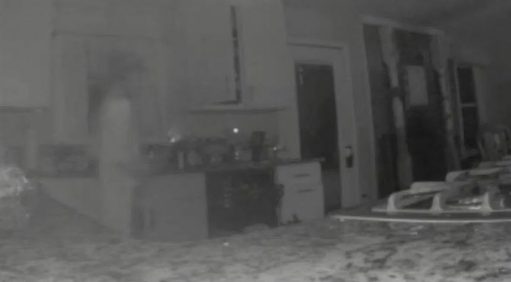
An Atlanta woman believes her home security camera spotted her son’s ghost.
On January 5, 2019, Jennifer Hodge was in her bedroom when she received an beeping notification: her Nest security camera had spotted a person in the kitchen. The rest is a story right off the televisions show “Night Gallery”.
“I was laying in bed watching TV with my daughter, and I was just about asleep,” Hodge said in a Facebook post. “The phone was between us, and I got a notification saying someone was in the kitchen. My daughter was like, ‘Mum, there’s a person in the kitchen. It looks like Robbie.’ I was stunned. It did look just like him — beard and all.”
Robbie, Michelle’s son, died of an overdose in 2016. He was just 23 years old. Michelle and her daughter were reportedly the only people at home at the time of the recording.
What of ghosts who want to pose in pictures?
Pretty odd stuff.
But check them out. Fakes or real? No one knows.
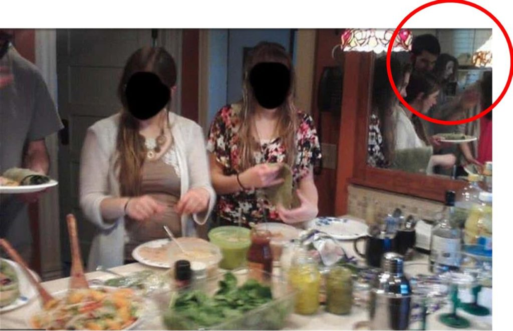
One could say it seems like ghosts really like to make an appearance at the parties they weren’t invited to. This is case like that. A group of friends were having a nice Easter brunch and they decided to take a picture of it. There was a mirror next to the table they were sitting at and while there is nobody but the people supposed to be there sitting at the table on one side of the photo, there is an extra person’s reflection caught in the mirror on the other side of the photo.
It looks like a woman with an extremely pale face, standing next to the table. All of the guests at the brunch claimed there was no one like that there with them and they had no idea who the person caught in the mirror reflection was.
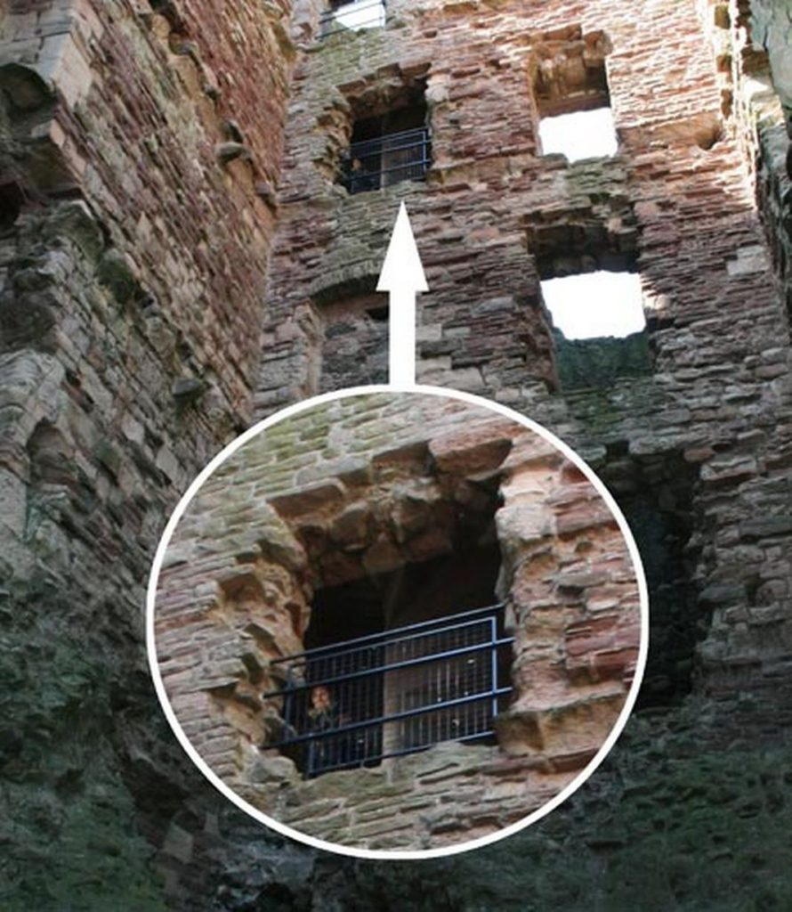
This picture was taken at Tantallon Castle near North Berwick. A ruined fortress badly damaged by an attack from Oliver Cromwell’s forces in 1651. The figure looks to be in period costume but no mannequins or costumed guides are used at the castle, adding to the mystery of the suspected ghost.
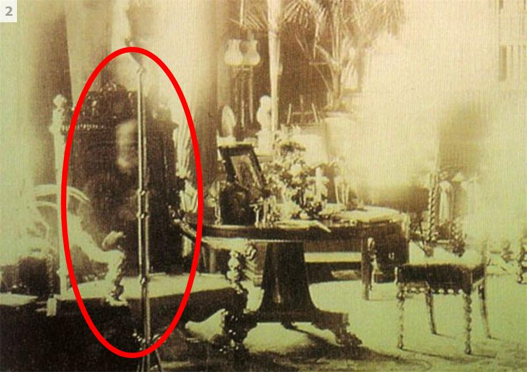
This photograph of the Combermere Abbey library was taken in 1891 by Sybell Corbet.
The figure of a man can faintly be seen sitting in the chair to the left.
His head, collar and right arm on the armrest are clearly discernible. It is believed to be the ghost of Lord Combermere.
Lord Combermere was a British cavalry commander in the early 1800s, who distinguished himself in several military campaigns.
Combermere Abbey, located in Cheshire, England, was founded by Benedictine monks in 1133. In 1540, King Henry VII kicked out the Benedictines, and the Abbey later became the Seat of Sir George Cotton KT, Vice Chamberlain to the household of Prince Edward, son of Henry VIII.
In 1814, Sir Stapleton Cotton, a descendent of Sir George, took the title “Lord Combermere” and in 1817 became became the Governor of Barbados. Today the Abbey is a tourist attraction and hotel.
Lord Combermere died in 1891, having been struck and killed by a horse-drawn carriage. At the time Sybell Corbet took the above photo, Combermere’s funeral was taking place some four miles away.
The photographic exposure, Corbet recorded, took about an hour. It is thought by some that during that time a servant might have come into the room and sat briefly in the chair, creating the transparent image.
This idea was refuted by members of the household, however, testifying that all were attending Lord Combermere’s funeral.
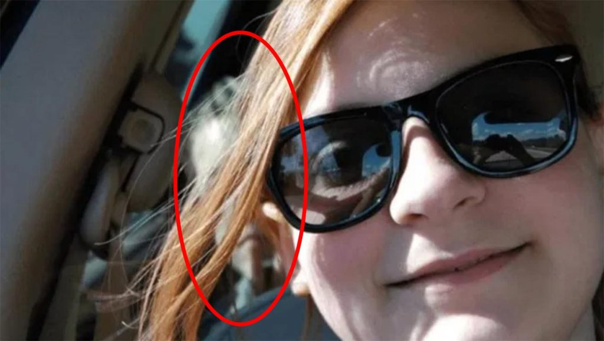
So this 13 year old girl takes a selfie in the car while her mother is driving down the road. No one is in the back seat, yet it appears that her photo captures an image of someone int he back seat.
Maybe true. Maybe fake. Who really knows?
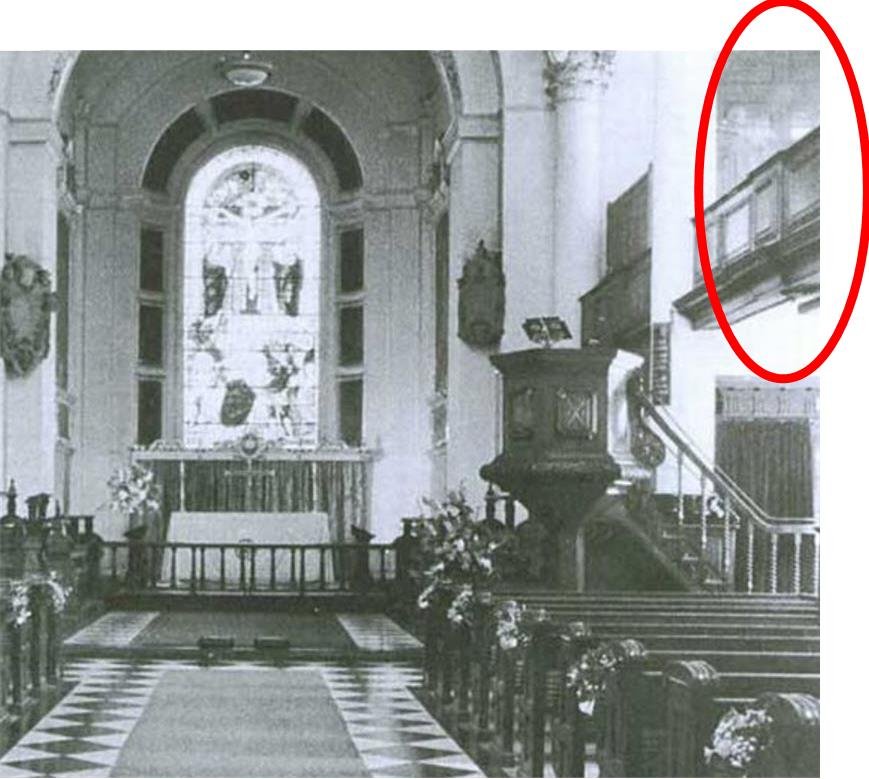
In 1982, photographer Chris Brackley took a photograph of the interior of London’s St. Botolph’s Church, but never expected what would appear on the film. High in the church’s loft, seen in the upper right-hand corner of his photograph, is the transparent form of what looks like a woman.
According to Brackley, to his knowledge there were only three people in the church at the time the photo was taken, and none of them were in that loft.
According to London Paranormal Database Records…
"Mr. Brackley was later contacted by a builder who recognized the face of one that he had seen in a coffin in the church."
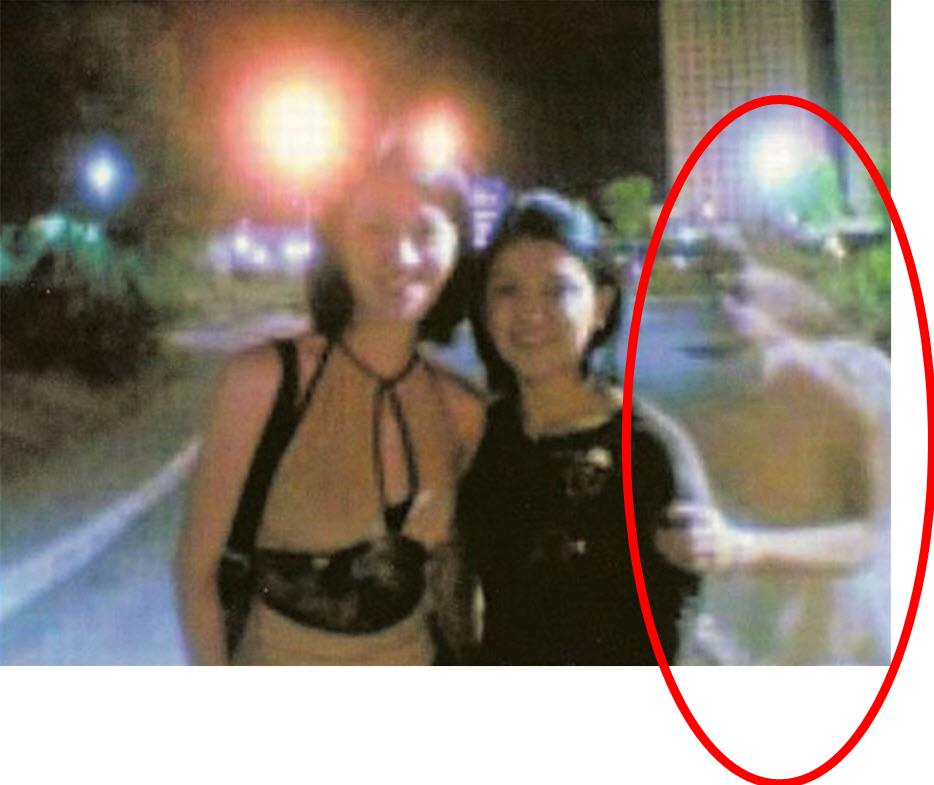
My goodness. This interesting photo was taken sometime around the year 2000 in Manilla, Republic of the Philippines.
According to The Ghost Research Society, two girlfriends were out for a walk one warm night. One of them entreated a passing stranger to photograph them using her cell phone’s camera (hence the low-resolution picture).
The result is shown here, with a transparent figure seeming to tug on the girl’s arm with a firm if friendly grip. Without further information on this photo, we have to admit that the ghost could have been added with image processing software. But if it’s genuine and untouched, it certainly qualifies as one of the best ghost photos around.
It’s pretty creepy.
It’s so very easy to modify pictures these days. Everything is digital, and Photoshop is everywhere. But you know, just because it can be done, doesn’t necessarily mean that it is being done.
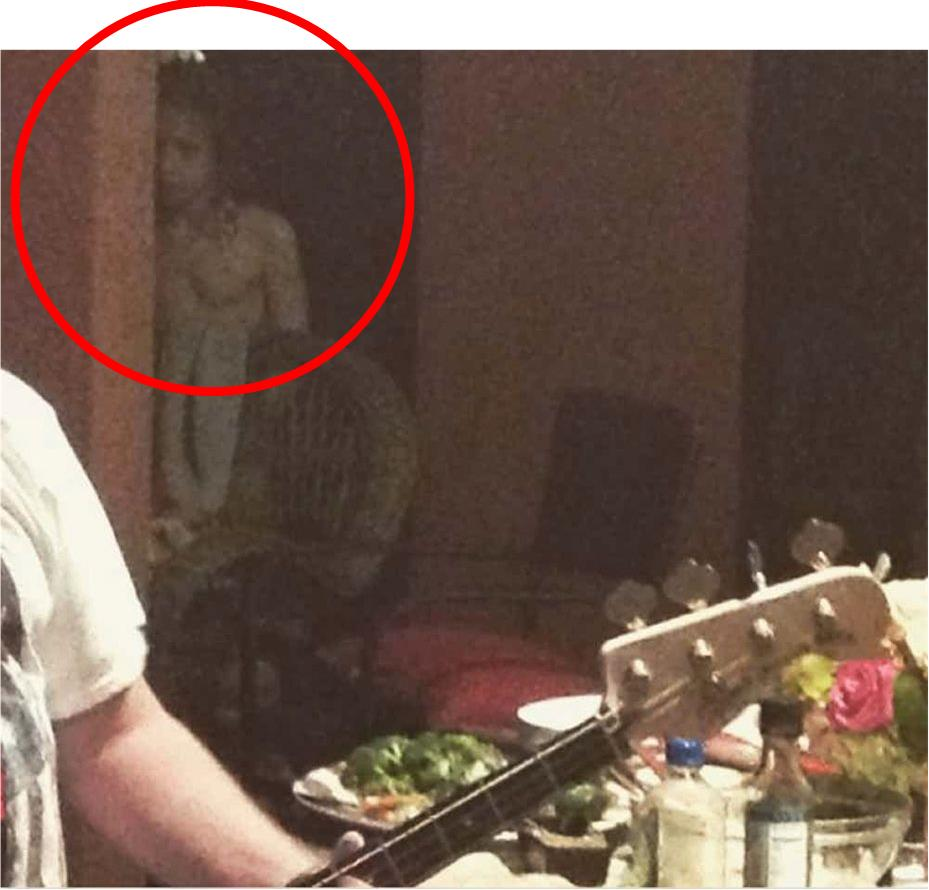
There was a controversial photo posted on Instagram by a news anchor, capturing a moment of the party she had thrown the night before. One of her friends was entertaining everybody by playing the guitar and singing, so she captured the whole thing with her phone.
Later, as she was going through the pictures, she noticed something strange in the background. It looked like a young boy peeking around the corner, trying to get a better view on the show.
After she posted the photo on Instagram, a wave of discussions started. People speculated that she faked the whole thing in order to get more media attention that could help her kick off her news anchor career, and others believed it was proof of yet another haunted house. No one can be sure what the truth actually was, but it indeed seemed strange.
Look up the picture and decide for yourself.
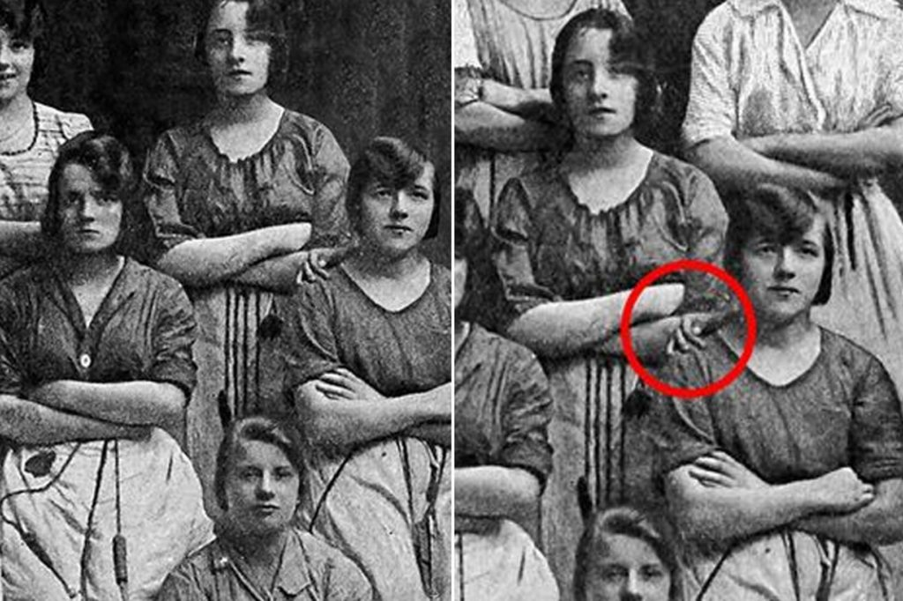
The ghostly object concealed in this spooky Irish snap will really give you a fright. Taken more than 100 years ago, experts tried to explain the hand as trick of light or a ruffle in a shirt. But neither idea works out.
It’s all pretty messed up.
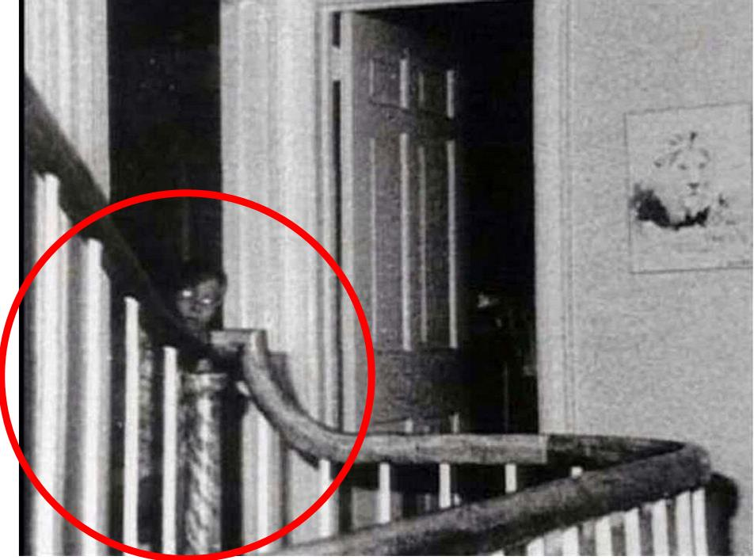
The Amityville house is one of the most famous haunted houses in the world. The tales of the ghosts living in this house have spread so much that they have inspired a huge franchise known as The Amityville Horror.
Before this whole story started going around, the Amityville house was a place like every other and there was, what appeared to be, a happy family living there. One night, the man went crazy and he killed his wife, all of his children, and he committed suicide after that.
From that moment on, people have been claiming that their ghosts have still been living in the house. Paranormal investigators went there to see if there was a truth to that story and they took a photo of a little boy. The curious thing about that photo was that there were absolutely no children around at the time the photo was taken.
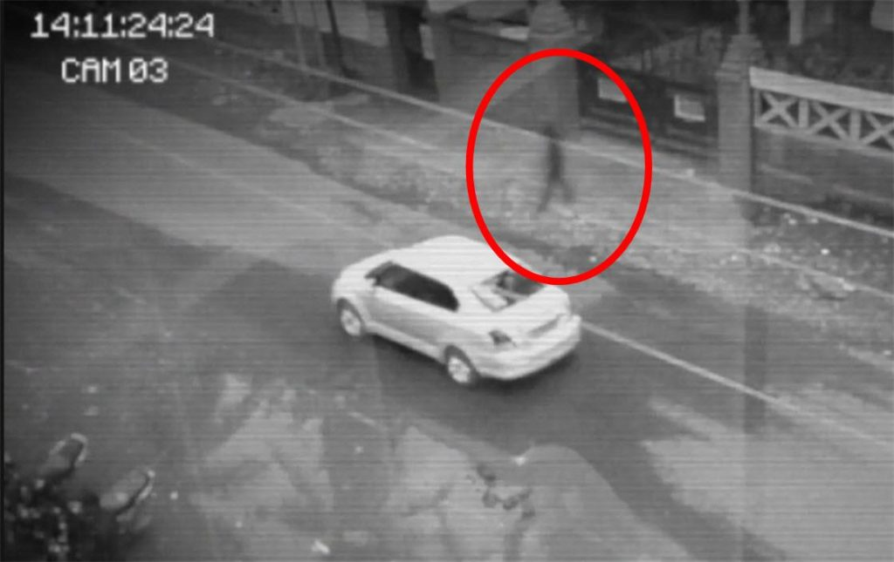
CCTV footage showing a shadowy spectre emerging from a driveway and straight into oncoming traffic.
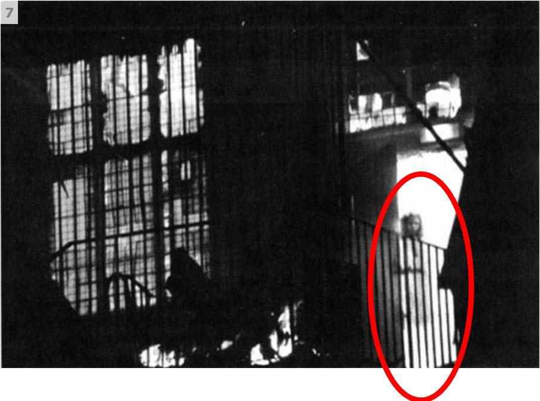
On November 19, 1995, Wem Town Hall in Shropshire, England burned to the ground. Many spectators gathered to watch the old building, built in 1905, as it was being consumed by the flames.
Tony O’Rahilly, a local resident, was one of those onlookers and took photos of the spectacle with a 200mm telephoto lens from across the street. One of those photos shows what looks like a small, partially transparent girl standing in the doorway.
Nether O’Rahilly nor any of the other onlookers or firefighters recalled seeing the girl there. O’Rahilly submitted the photo to the Association for the Scientific Study of Anomalous Phenomena which, in turn, presented it for analysis to Dr. Vernon Harrison, a photographic expert and former president of the Royal Photographic Society.
Harrison carefully examined both the print and the original negative, and concluded that it was genuine. “The negative is a straightforward piece of black-and-white work and shows no sign of having been tampered with,” Harrison said.
But who is the little girl?
Wem, a quiet market town in northern Shropshire, had been ravaged by fire in the past. In 1677, historical records note, a fire destroyed many of the town's old timber houses. A young girl named Jane Churm, the legends say, accidentally set fire to a thatched roof with a candle.
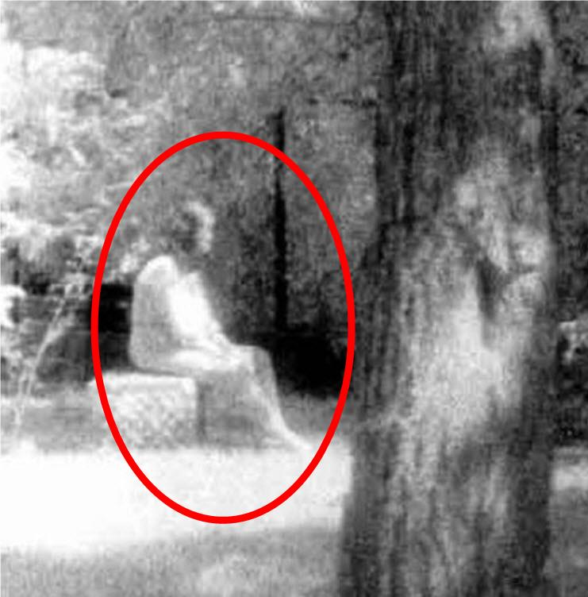
This photo was taken during an investigation of Bachelor’s Grove cemetery near Chicago by the Ghost Research Society (GRS). On August 10, 1991, several members of of the GRS were at the cemetery, a small, abandoned graveyard on the edge of the Rubio Woods Forest Preserve, near the suburb of Midlothian, Illinois.
Reputed to be one of the most haunted cemeteries in the U.S., Bachelor’s Grove has been the site of well over 100 different reports of strange phenomena, including apparitions, unexplained sights and sounds, and even glowing balls of light.
GRS member Mari Huff was taking black and white photos with a high-speed infrared camera in an area where the group had experienced some anomalies with their ghost-hunting equipment. The cemetery was empty, except for the GRS members.
When developed, this image emerged: what looks like a lonely-looking young woman dressed in white sitting on a tombstone. Parts of her body are partially transparent and the style of the dress seems to be out of date.
Other ghosts reportedly seen in Bachelor's Grove include figures in monks' clothes and the spirit of a glowing yellow man.
And now for something odd…
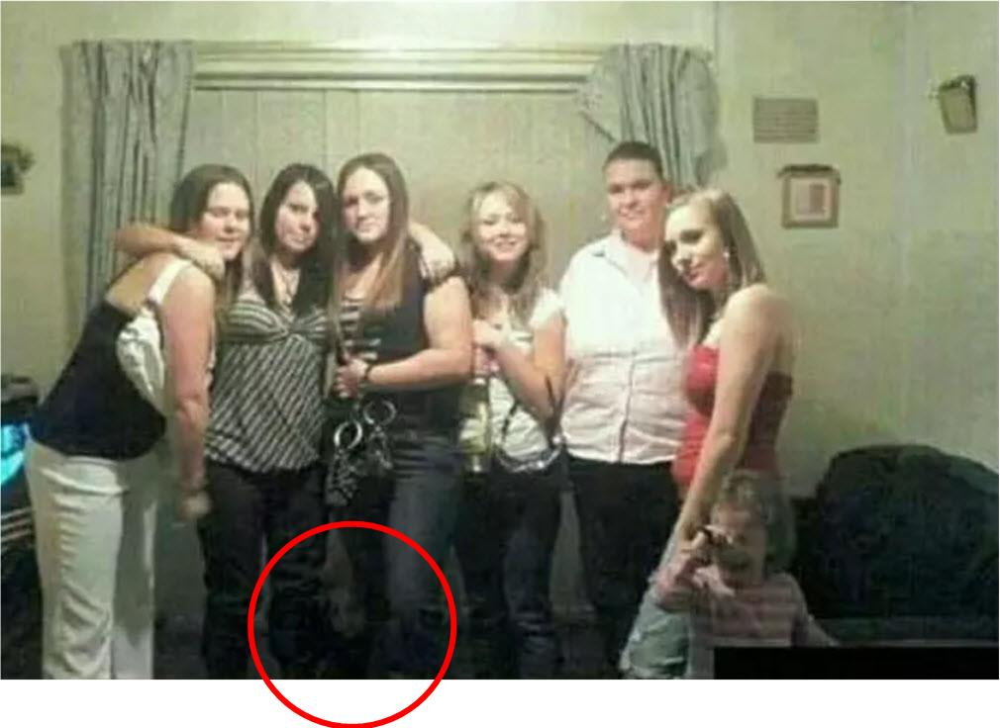
This photo, taken on a cell-phone shows a group of girls posing for a picture in the middle of the lounge room. The young girl seen crying in the bottom right corner of the image refused to take part in the picture because she said ‘The little boy was scaring her!’ It wasn’t until later, when her mother was reviewing the photo that she realized what the little girl was talking about.
Take a look between the legs of the girls second and third from the left. You can clearly see the face of a young boy peering out from behind the group. If it was simply a shadow or optical illusion why did the little girl get so scared?
Theaters are believed by many to be common haunting grounds for ghosts. There is something about their unique atmosphere that seems to attract the supernatural. According to Mary Destany Martin, security guards at the theater at her local high school captured some weird photos of the school’s own resident ghost.
The security guards visited the theater after a motion alarm went off at around 1:00 early one morning. They didn’t see anything but took a photo on their way out, just in case. When reviewing the photo, a guard was shocked to notice the figure of a woman walking down the stairs of what he was certain was an empty theater. The figure appears to be entirely black and white, in stark contrast to the rest of the theater, giving her a strange, otherworldly appearance.
Yes. It’s pretty strange.
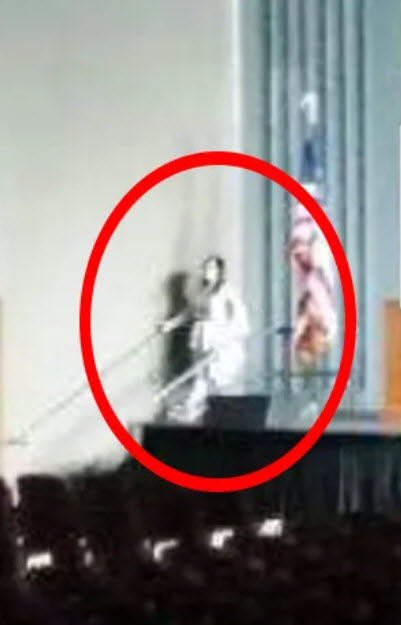
One thing is for certain, she was able to trip the motion sensors. So she had substance.
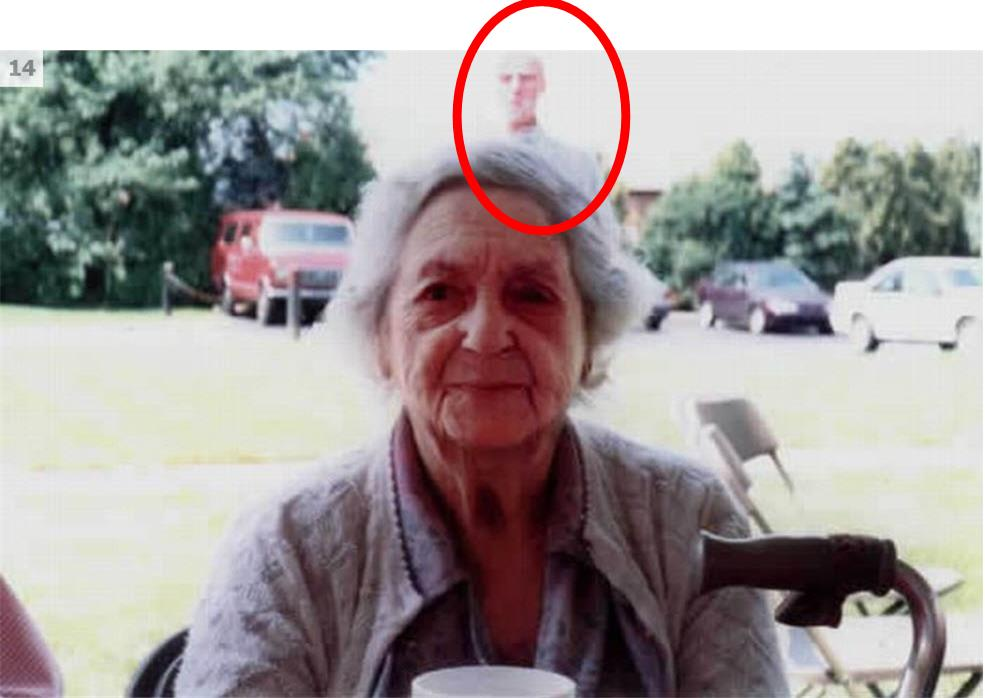
This photo was received from Denise Russell.
“The lady in the color photo is my granny,” she says. “She lived on her own until age 94, when her mind started to weaken and had to be moved to an assisted living home for her own safety. At the end of the first week, there was a picnic for the residents and their families. My mother and sister attended. My sister took two pictures that day, and this is one of them.
It was taken on Sunday, 8/17/97, and we think the man behind her is my grandpa who passed away on Sunday, 8/14/84.
We did not notice the man in the picture until Christmas Day, 2000 (granny had since passed away), while browsing through some loose family photos at my parents’ house. My sister thought it was such a nice picture of granny that she even made a copy for mom, but still, nobody noticed the man behind her for over three years!
When I arrived at my parents’ house that Christmas day, my sister handed me the picture and said, “Who do you think this man behind granny looks like?”
It took a few seconds for it to sink in. I was absolutely speechless. The black and white photos show that it really looks like him.
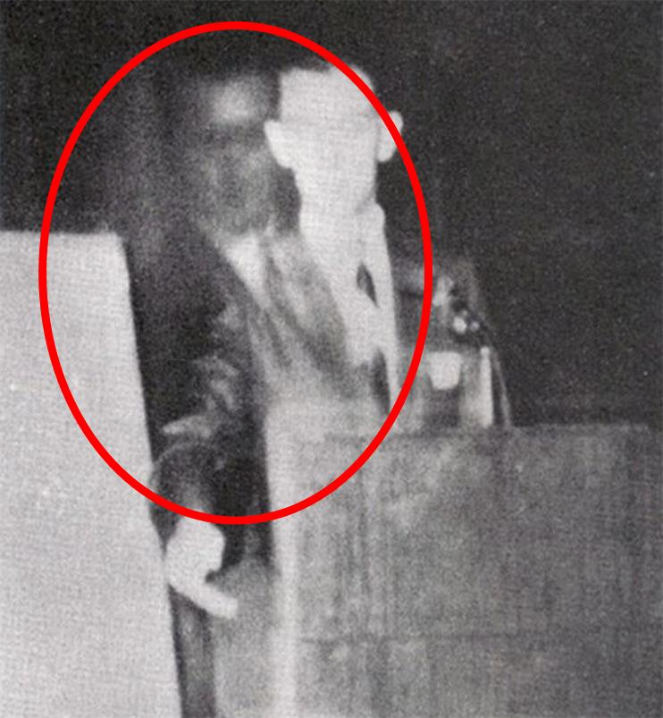
This photo was taken on November 16, 1968 when Robert A. Ferguson, author of Psychic Telemetry: New Key to Health, Wealth, and Perfect Living, was giving a speech at a Spiritualist convention in Los Angeles, California.
Faintly appearing next to Ferguson is a figure that he later identified as his brother, Walter, who died in 1944 during World War II. At first glance, this might seem to be a double exposure or some kind of darkroom trickery, but this photo is a Polaroid (one of several taken of Ferguson at the time), making any kind of hoaxing quite unlikely.
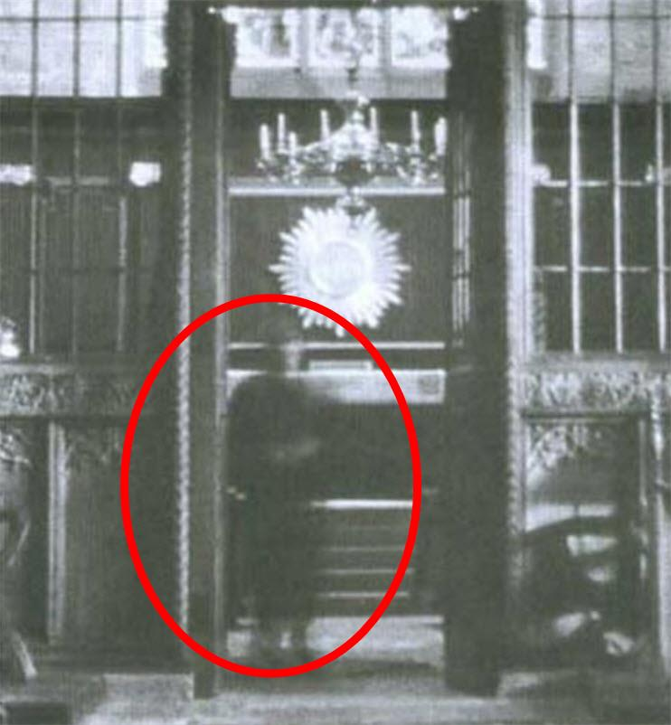
Sefton Church is an ancient structure (started in the 12th century and finished in the early 16th century) in Merseyside, England, just north of Liverpool. This particular photograph was taken inside the church in September, 1999.
According to Brad Steiger’s Real Ghosts, Restless Spirits and Haunted Places, where this photo was found, there was only one other photographer in the church beside the person who took this picture. Neither of them recalled seeing the ghost or any flesh-and-blood person standing there who could account for this image. Because the figure is all in black, it has been theorized that the apparition could be that of a church minister.
It has been reported that a pub next door to the church, called the Punch Bowl, is said to be haunted by the ghost of a man in blue nautical garb, which has been reported there for many years.
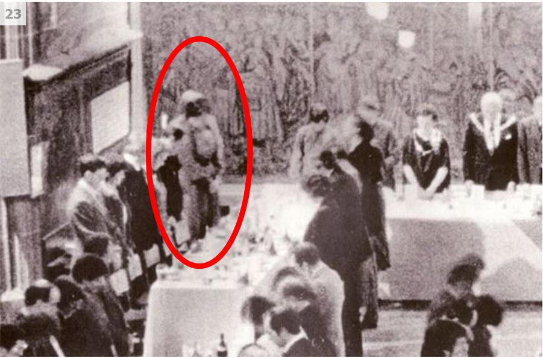
On January 22, 1985, the Coventry Freeman organization were having a dinner event at St. Mary’s Guildhall in Coventry, U.K. Everyone in the group had her or his head bowed in prayer when this photo was taken — including a towering, mysterious figure standing top left. The strange cowled spectre appears to be wearing very odd clothing. The clothing looks like a kind of battle armor from the software game “Doom”.
Lord Mayor Walter Brandish, who was present at the dinner, said there was no one at the event who was dressed like that, and he could not explain the presence of the interloper in the photo. St. Mary’s Guildhall dates back to the 14th century and served as a prison for Mary, Queen of Scots.
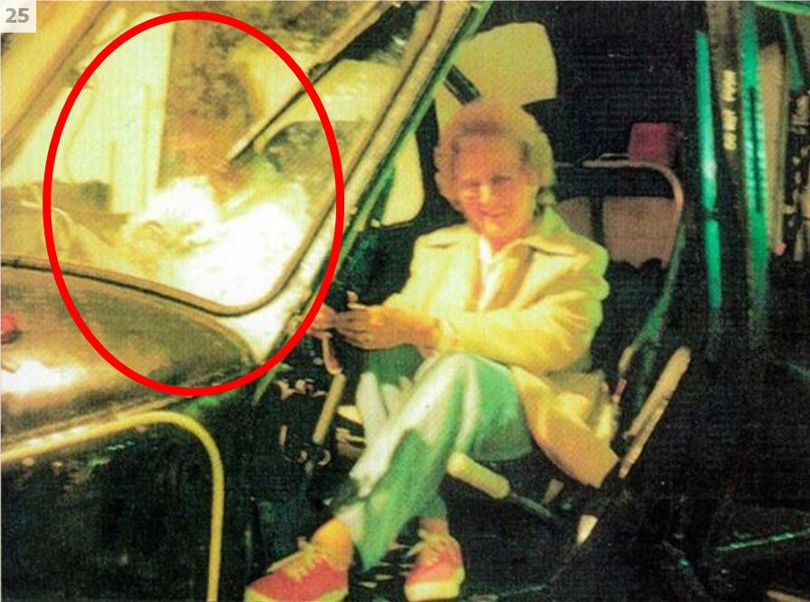
Mrs. Sayer and some friends were visiting the Fleet Air Arm Station at Yelverton, Somerset, England in 1987 when this photo was taken. They thought it would be cute to take a picture of her sitting in the seat of retired helicopter.
No one, Mrs. Sayer insists, was sitting next to her in the pilot’s seat… although a figure in a white shirt can clearly be seen sitting there.
She told an investigator with the Society for Psychical Research that she remembered feeling rather cold sitting in that seat, even though it was a hot day.
Other pictures taken at the same time did not come out. Worth noting is that the helicopter was used in the Falklands War, but there is no information as to whether or not a pilot died in that aircraft.
Kim Davison from Queensland, Australia posted a picture on the Toowoomba Ghost Chasers Facebook page showing what appears to be the ghost of a young girl, who died in the same spot 100 years ago
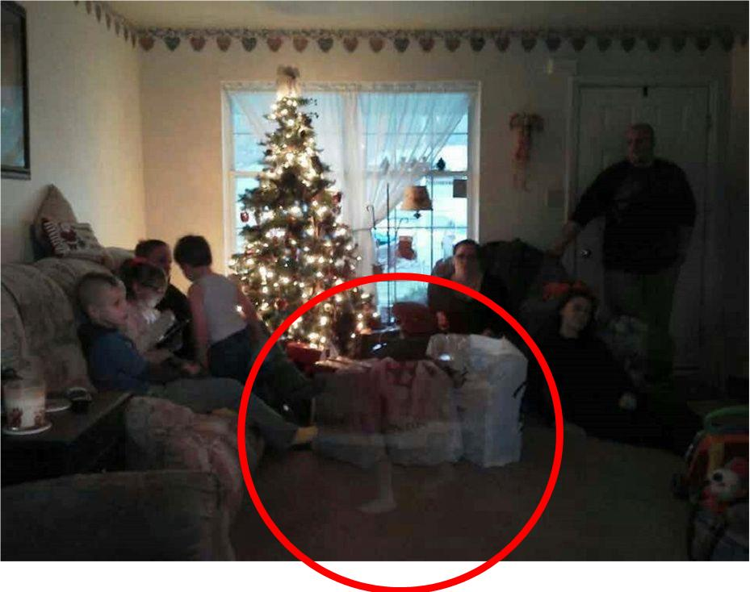
It was what seemed to be a completely normal Christmas get-together; people sitting in their living room next to their Christmas tree and a pile of presents. Nothing curious about that at all. At least until someone decided to take a picture of that merry moment. After that, the moment wasn’t so marry anymore.
In the middle of the picture, there seems to be a ghostly figure squatting over the pile of presents. You can clearly see the feet that belong to this mysterious being.
After the photo was analyzed by experts, the conclusion was that the feet probably belong to one of the kids in the picture, and it was nothing more than a glitch in the camera. However, there still is some doubt since the child in question was wearing socks, while the feet in front of the present seem to be bare. Besides that, they are also too large to belong to the little boy in question.
Then you have this absolutely odd-ball photo…
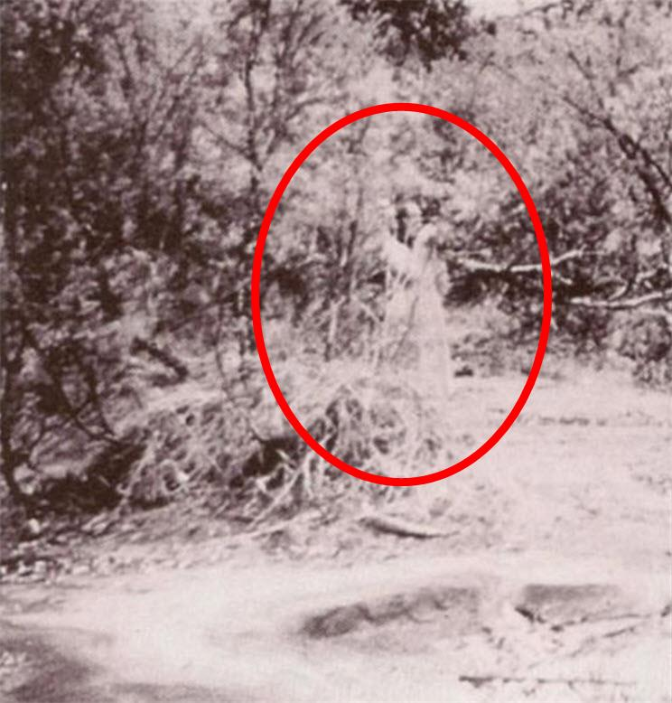
This photo was taken at Corroboree Rock at Alice Springs, Northern Territory, Australia in 1959. What does not seem to be a trick of light and shadow is a human form, semi-transparent, wearing what looks like a long white dress or gown. More curious, the figure seems to be holding something in the manner that a person holds a camera or binoculars.
High forehead, long back hair in a mullet style. Appears to be a male, wearing a long white gown, and holding a what?
One possibility is that this is a double exposure of a living person. In 1959, this image would have been captured on film.
If it is not a double exposure and this is a spirit captured on film, then a number of questions arise: [1] What is the entity looking and why? [2] Do they have cameras and binoculars in the afterlife? Or [3] is this an instance of a time slip in which the camera has recorded a scene from a different time?
My goodness!
Now this next picture is something that is concerning and allows your mind to wonder what is going on…
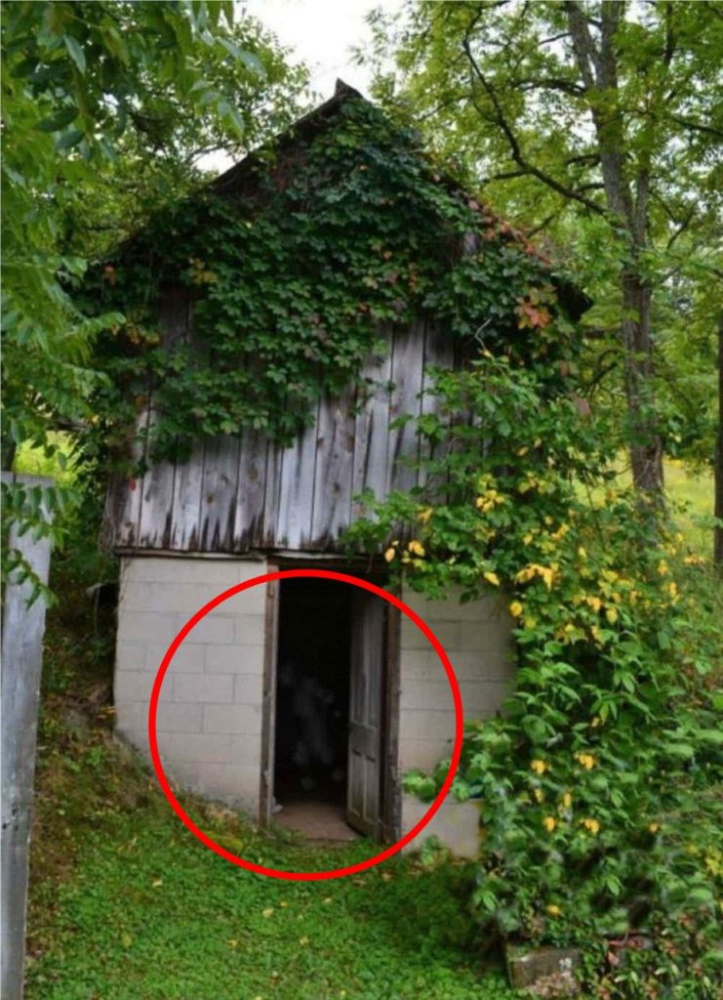
When it comes to abandoned houses, it is quite easy to start a rumor about some paranormal activity. Most of the ghost stories actually start this way; “Once upon a time, there was an abandoned house…”
We’ve all heard something like that already.
However, there is one specific house that has drawn a lot of people’s attention after a picture of a ghostly figure was captured there. No one knows exactly who used to live there or what happened to the people living there previously.
There has been some speculation about different horror stories connected to this house and the ghosts inhabiting it. But the picture was quite clear; someone was standing in the doorway. We can’t be sure if it was just a shadow shaped like a person, but from the look of it, it surely seemed like a ghostly, transparent figure.
And some things are truly WTF!
Like this, for instance…
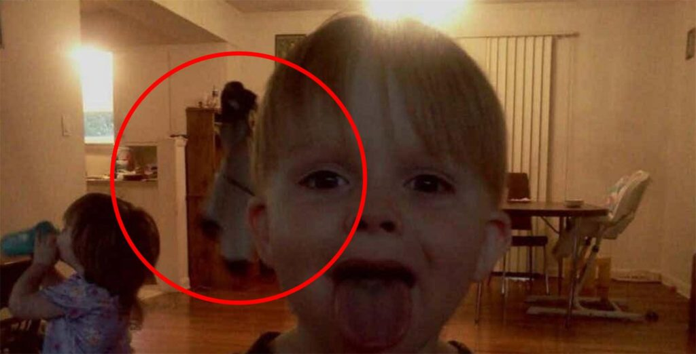
There was a girl who wanted to take some silly pictures of her cousins while they were playing. Instead of that, she captured something that can hardly be identified as anything else other than a potential paranormal activity.
The weirdest thing about this photo is that it’s impossible to say what we actually see in it. It is clear that there is some weirdly shaped gray and black figure behind the little boy, but it’s impossible to say what it resembles.
It is not a human nor an animal, but it clearly is something that has appeared only in the picture; nobody saw it in the room before or after that.
This picture is definitely unique and different from the others, which is what makes it even more disturbing and mysterious. What do you think the shape in the picture was? Or was it just another attempt to make an ordinary picture go viral?
Indeed, somethings just defy description.
In 2015, Kevin Brown snapped a series of photos on his iPad while he was at the Fort Worth Museum of Science and History in Texas. Brown, who was there with his niece and two nephews didn’t see anything strange about the images at the time they were taken. It wasn’t until later that day that his niece noticed something very unsettling in one of the photos…
Yeah.
And here’s a close-up.
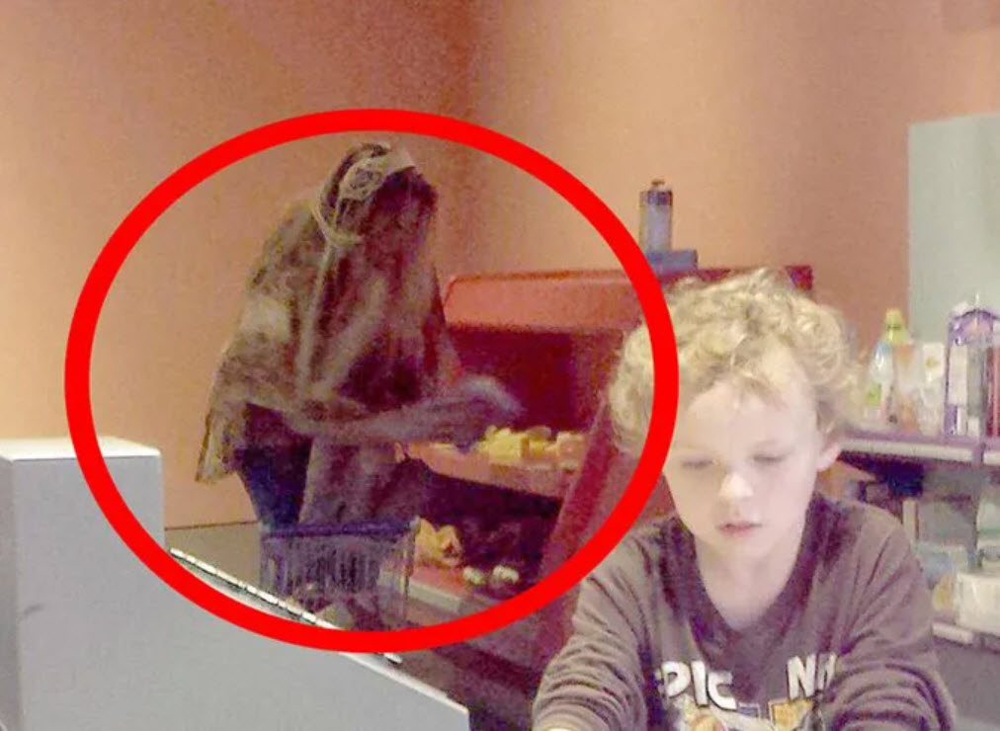
And now for some more strange stuff…
Ah yes. there are all sorts of creatures and things out there. Both terrestrial and extraterrestrial.
And while it is easy enough to assume that every picture, and every video on the internet is a hoax of one sort or the other (because, after all many of them actually are) there are videos that can and do depict things that might…
…just might…
…describe a window into the non-physical reality that surrounds our visible reality…
…or might not.
But do not discount EVERY video and picture you see as a hoax. For they might, just maybe, give you an insight into the reality that surrounds us.
Webcams
There are numerous internet websites that post live feeds of “haunted” areas. These feeds have produced hundreds, even thousands of images that defy rational description.
Such as this one…
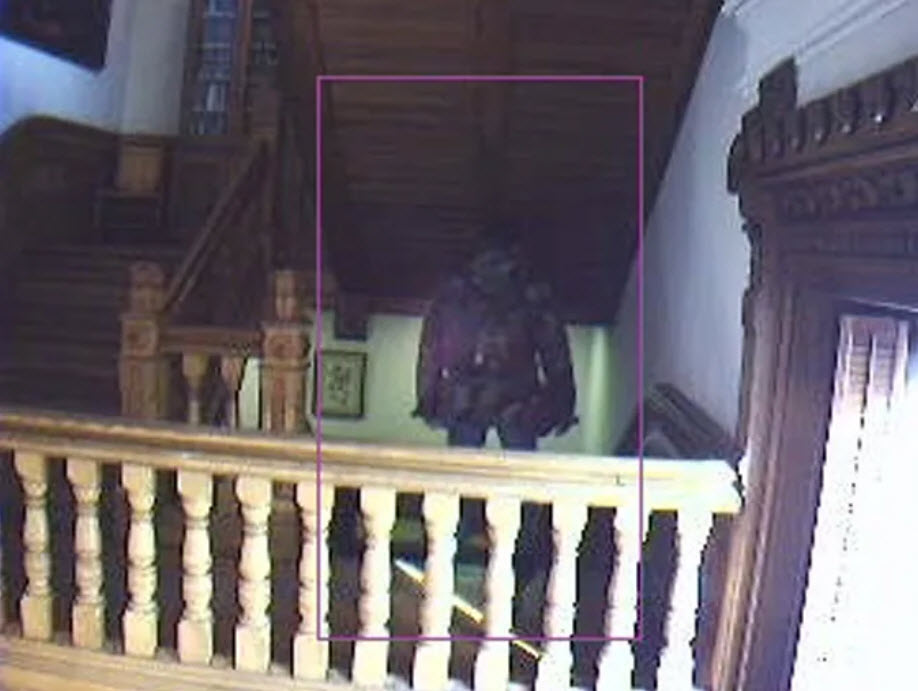
According to those who have worked at or visited the Willard Library, there is definitely a supernatural entity or two walking the halls of the building. To prove it, they have set up paranormal webcams so that ghost hunters around the world can keep a close eye out and send in screenshots when they spot something ghostly.
There are a few types of ghosts that have been spotted by viewers and patrons of the library. The most common entity to make an appearance on film is different colored orbs hovering in various places, usually the stairwell. However, employees of the library have reported spotting a Grey Lady and a young boy haunting this stairwell. They believe that the orbs are merely how the ghosts manifest on camera.
You can see a listing of different ghost-sighting webcams HERE.
Is that it?
Now, is everything that we sense related to the non-physical world that surrounds us, or are there other things involved?
Well, there are other things.
As you all recall, we travel the MWI as a lone consciousness. We share world-lines in a “ghost shadow” consciousness but actually meeting up with another consciousness where we are both the dominant consciousnesses on that world-line is a rare event. And sometimes, we can pick up some events that are difficult to explain as they involve both consciousness, the MWI, and physical manifestation.
Consider this graphic…
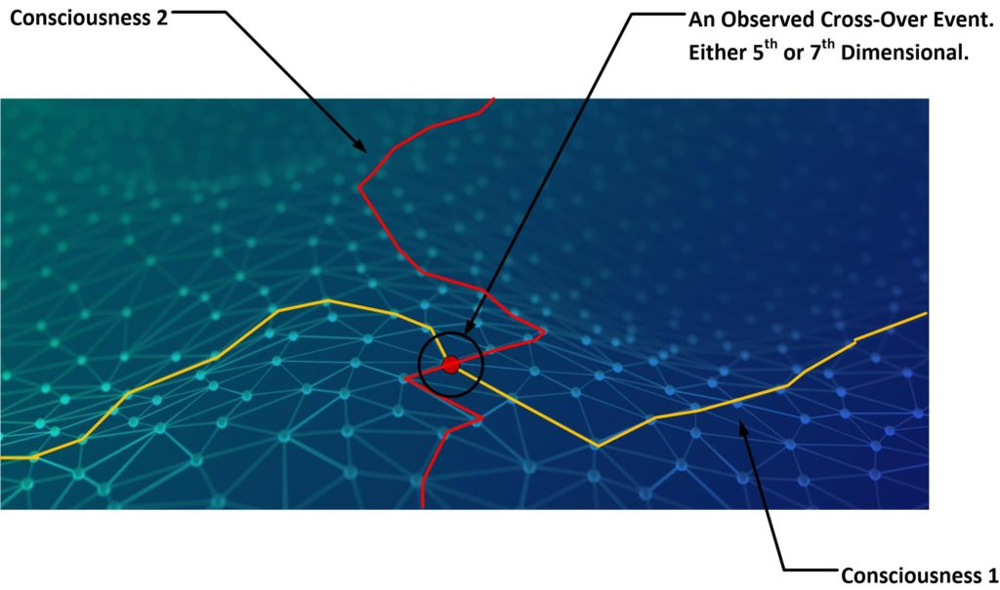
Now consider this…
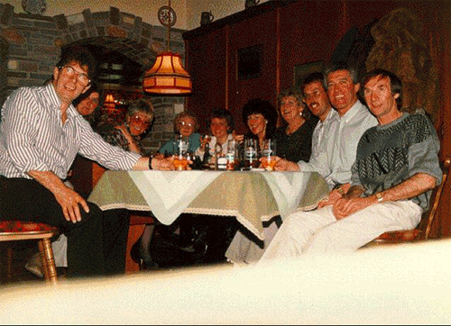
These two photos were taken in 1988 at the Hotel Vierjahreszeiten in Maurach, Austria. Several vacationers gathered for a farewell party at the hotel and decided to take a group photo. One of the party, Mr. Todd, set up is Canon film camera on a nearby table and pointed it at the group.
(The table is the white band at the bottom of the photos.) He set the self-timer on the camera and hurried back to the table.
The shutter clicked and the film wound forward, but the flash did not fire. So Todd set the camera for a second shot. This time the flash fired.
The film was later developed, and it wasn’t until one of party members was viewing the photos that it was noticed that the first (non-flash) photo showed a somewhat blurry extra head! (In the sequence above, the second (flash) photo is actually shown first for the sake of comparison.)
No one recognized the ghostly woman, and they could not imagine how her image appeared in the picture.
Besides being a bit out of focus, the woman’s head is also too large compared to the other vacationers, unless she is sitting closer to the camera, which would put her in the middle of the table. The photo was examined by the Royal Photographic Society, the photographic department of Leicester University, and the Society for Psychical Research, all of which ruled out a double exposure as the cause.
And consider this…
On July 6th, 2014, Martin Springall took a series of photos of his 4 year old daughter on a beach in Zushi, Japan. Springall, who was living in Tokyo at the time claims that no one else was around when he took the photographs and that he didn’t notice anything strange until he looked at the pictures later that night. In one of the images there appears to be a person in black boots standing directly behind his daughter.
When asked about what he had captured, Springall recalled, “I took a few pictures, and when I was looking through them at night, I noticed what appeared to be a pair of boots behind her in one of the photos,” he said. “I took several of her in the same spot, but only one had the boots.” My daughter is really shy, and she wouldn’t have taken a picture if there was someone standing behind her, which I would have definitely noticed.”
What are they talking about?
They are taking about this frozen moment in time…
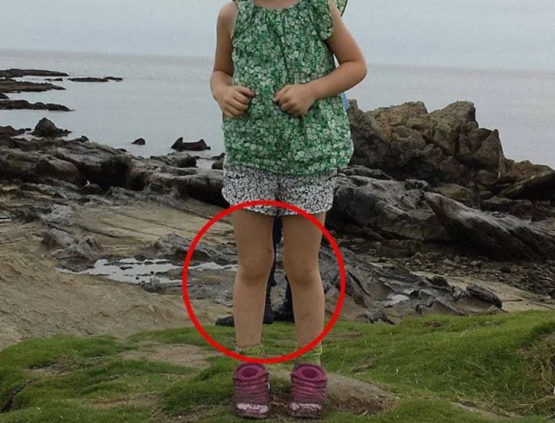
And then we have this…
There is nothing weird about two girlfriends taking a selfie while they’re alone. Or is there? The word “alone” is actually open for a discussion in this case. Those two girls were partying in a house all by themselves and nothing weird has happened for the whole time until they decided to take a selfie. While the girls stated that they had been all alone in the house, there is a clear reflection in the mirror of a third girl standing behind them. So who is she and what was she doing there?
Conclusions
There is a non-physical reality that surrounds us. It is present in every world-line and it tracks our reality as we experience “time”.
Other species can see things that we cannot. And we can see things (by using certain technologies) that they cannot sense.
Extraterrestrials, dimensional travelers, visitors, and intelligent entities hide from humans in “plain sight” by phasing out of our observation. This is how the human species is monitored, observed, manipulated and controlled.
It is nothing to get all “hot and bothered about”, it is just simply how it is done.
Additionally, there are cross-over considerations regarding the MWI and world-lines that can be recorded on film for a fleeting moment.
The truth is that we, as humans, do not understand the nature of our reality well enough to account for various odd-ball events that are periodically captured on film or video. Rather than automatically discount them as hoaxes, simply because they do not fit within the confines of our established world-view, perhaps we need to embrace a larger and more comprehensive understanding of the universe and our reality, instead.